2024
Août
-
31 —
Poneys de Noël à gogo, gloubi-boulga émotionnel et comédie inspirée


 ♡ La Princesse et le bodyguard, La probabilité statistique de l’amour au premier regard, À Noël mon Prince viendra, Love again, Amoureuse de mon meilleur ami, Vice versa 2, ♡ Harold et le crayon magique
♡ La Princesse et le bodyguard, La probabilité statistique de l’amour au premier regard, À Noël mon Prince viendra, Love again, Amoureuse de mon meilleur ami, Vice versa 2, ♡ Harold et le crayon magique -
18 —
Pseudo comédies, presque romance, semblant d’horreur et rencontres


 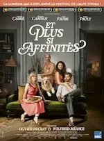
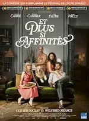 Ducobu passe au vert, Jeff Panacloc - À la poursuite de Jean-Marc, To the Moon, Le mangeur d’âmes, Et plus si affinités, Rose - Petite fée des fleurs
Ducobu passe au vert, Jeff Panacloc - À la poursuite de Jean-Marc, To the Moon, Le mangeur d’âmes, Et plus si affinités, Rose - Petite fée des fleurs -
02 —
Romance, drames, comédies et bestioles


 ♡ Drawing Closer, L’imaginaire, Bis Repetita, Gremlins
♡ Drawing Closer, L’imaginaire, Bis Repetita, Gremlins
Juillet
- 25 — Drama japonais From 5 to 9
-
11 —
Actions & comédie, quelques frissons, poney de Noël et émotions fortes

 Chien et chat, The fall guy, Sleep, Comment rencontrer l’âme sœur en 10 leçons, Love coach malgré moi, Arthur the King
Chien et chat, The fall guy, Sleep, Comment rencontrer l’âme sœur en 10 leçons, Love coach malgré moi, Arthur the King -
05 —
Tournage qui vire au fiasco et intellos asociaux

 Fiasco, The Big Bang Theory
Fiasco, The Big Bang Theory -
04 —
Flics fêlés, aides soignants impliqués, prof dépassé et requins mutants


 Les infaillibles, Maison de retraite 2, Pas de vagues, Sous la Seine
Les infaillibles, Maison de retraite 2, Pas de vagues, Sous la Seine -
04 —
Amis imaginaires, guide à plumes, monstres et rêve plus doux que la réalité


 Blue et compagnie, Le garçon et le héron, Monster High 2, ♡ Le Royaume des Abysses
Blue et compagnie, Le garçon et le héron, Monster High 2, ♡ Le Royaume des Abysses
Juin


Avril


Mars
Février
-
11 —
Des mentors, de l’amour et un carnage
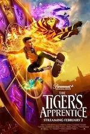
 ♡ The Tiger’s Apprentice, The Underdoggs, Welcome to Valentine, Blue Eye Samurai
♡ The Tiger’s Apprentice, The Underdoggs, Welcome to Valentine, Blue Eye Samurai -
03 —
Une série et deux films français étonnants
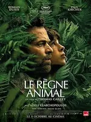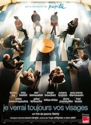
 Le règne animal , Je verrai toujours vos visages, Panda
Le règne animal , Je verrai toujours vos visages, Panda
Janvier
-
28 —
De la magie et des rêves
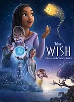
 Wish - Asha et la bonne étoile , Wonka
Wish - Asha et la bonne étoile , Wonka -
23 —
Magie, art, amour et délire complet


 L'ours montagne, Séraphine, ♡ C'était à Rome, La boutique fantastique
L'ours montagne, Séraphine, ♡ C'était à Rome, La boutique fantastique -
20 —
💖 Quatre courts-métrages d’animation
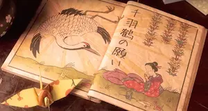


 ♡ A folded wish, ♡ Windup, ♡ Run Totti run, ♡ Achoo
♡ A folded wish, ♡ Windup, ♡ Run Totti run, ♡ Achoo -
14 —
Films pas tip top


 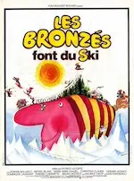Spider-man : Across the spider-verse, Les piliers de la Terre, I give my first love to you, Les sous-doués passent le bac, Les Bronzés font du ski
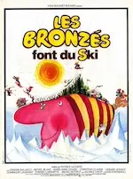Spider-man : Across the spider-verse, Les piliers de la Terre, I give my first love to you, Les sous-doués passent le bac, Les Bronzés font du ski -
14 —
Trois films d’animation

 ♡ La maison des égarées, Ron débloque, ♡ Magical DoReMi : À la recherche des apprenties sorcières
♡ La maison des égarées, Ron débloque, ♡ Magical DoReMi : À la recherche des apprenties sorcières -
07 —
Des questions sans réponse
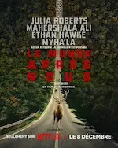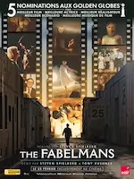Dream scenario, Le monde après nous, The Fabelmans
 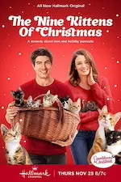
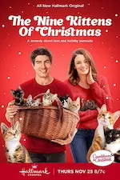